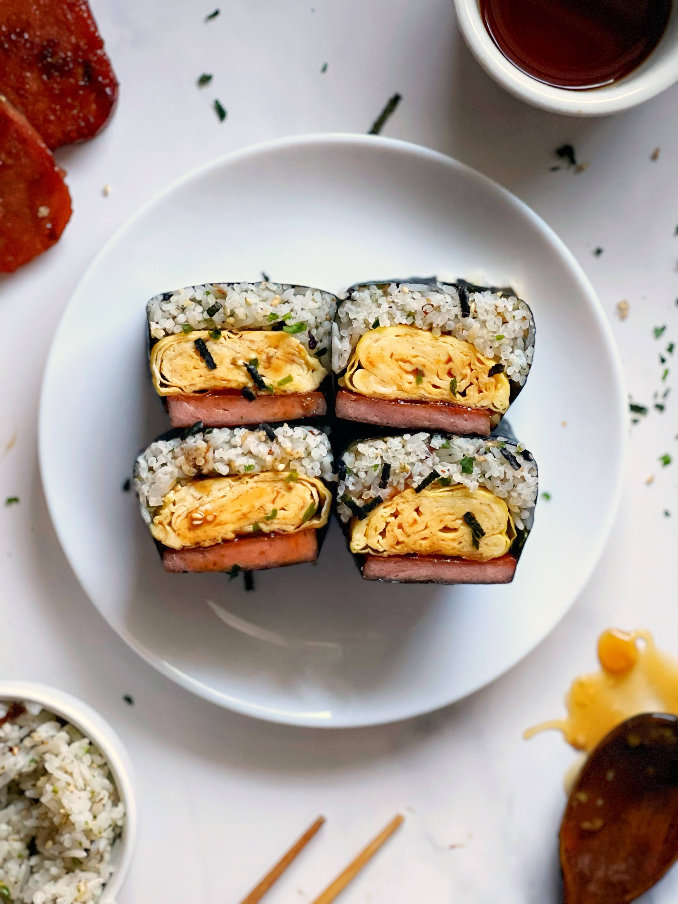

Spam Musubi

What is Tamago Sando?
Tamago (たまご) means eggs and sando is short for san-doh- itchi (サンドイッチ)—sandwich in Japanese. It is a modest, low-maintenance, convenience store sort of food. In comparison with American-style egg sandwiches, Japanese egg sandwich is a lot simpler. Usually just mashed boiled eggs between the bread. There are no spices, lettuce, or anything extra. It’s as pure as an egg salad sandwich can get.
Ingredients
- 2 cups of rice (I prefer sushi rice for softness)
- 1/4 cup brown sugar
- 1/4 cup soy sauce
- 1/4 cup mirin
- nori wraps
Optional Ingredients
- Furikake to taste (to mix into the cooked rice)
- Kewpie Mayonnaise (to use between egg and rice)
- French Omelette (to layer between spam and rice)
Steps
*Note: If spam is too salty, soak cut spam in water for 20-30 minutes, changing water periodically, or just use alot more rice in the musubi.
- Cook rice according to package instructions
- Cut 1 can of spam into 7 equal pieces and cook until nicelgy browned on each side.
- Mix all teriyaki sauce ingredients in a pan over medium heat until thickens about 5 minutes.
- Coat spam in teriyaki sauce (another 3 minutes)
- Use musubi mold (or spam can) to cut egg and shape rice then assemble in this order; rice, mayo, egg, spam, and then wrap with nori
Back